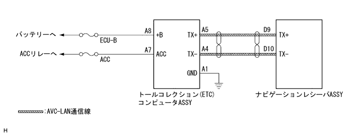
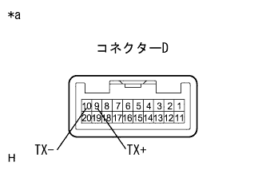

DTC B15D7 ETC Not Connected |
DTC B1598 No Response from ETC Device |
| DTCNo. | Diagnosis Description | Inspection Area |
|---|---|---|
| B15D7 |
|
|
| B1598 | No response from ETC |

)| Step 1 | Clear DTC |
Using SST (TaSCAN), read the DTCs following the screen. (see)
Select "Clear" on the screen display and clear the DTCs following the screen.
Turn IG OFF.
| NEXT | |
| Step 2 | Recheck DTC |
Using SST (TaSCAN), check the DTCs again and proceed to the destination below. (see)
| Result | Proceed to |
|---|---|
| Code output | A |
| No code output | B |
|
| ||||
| A | |
| Step 3 | Inspect Wire Harness and Connector (Toll Collection (ETC) Computer Assembly +B, ACC, GND) |
Pre-inspection Preparation
Disconnect connector A of the toll collection (ETC) computer assembly.
Inspect Resistance and Voltage
Using SST (Toyota electrical tester), measure the resistance and voltage between each terminal of the toll collection (ETC) computer assembly vehicle side wire harness connector and body ground.
| Tester Connection (Terminal Symbol) | Condition | Standard |
|---|---|---|
| A1 (GND) - Body ground | Always | Below 1 Ω |
| Tester Connection (Terminal Symbol) | Condition | Standard |
|---|---|---|
| A8 (+B) - Body ground | IG OFF | 11 to 14 V |
| A7 (ACC) - Body ground | ACC ON | 11 to 14 V |
|
| ||||
| OK | |
| Step 4 | Inspect Navigation Receiver Assembly (TX+, TX-) |
Pre-inspection Preparation
 |
Disconnect all connectors of the navigation receiver assembly.
Resistance Inspection
Using SST (Toyota electrical tester), measure the resistance between the terminals of the navigation receiver assembly connector.
| Tester Connection (Terminal Symbol) | Condition | Standard |
|---|---|---|
| D9(TX+) - D10(TX-) | Always | 60 to 80 Ω |
| *a | Connector disconnected (Navigation receiver assembly) |
|
| ||||
| OK | |
| Step 5 | Inspect Wire Harness and Connector (Navigation Receiver Assembly - Toll Collection (ETC) Computer Assembly) |
Pre-inspection Preparation
Disconnect connector D of the navigation receiver assembly.
Disconnect connector A of the toll collection (ETC) computer assembly.
Resistance Inspection
Using SST (Toyota electrical tester), measure the resistance between the connector terminals of the vehicle wire harness between the navigation receiver assembly and toll collection (ETC) computer assembly.
| Tester Connection (Terminal Symbol) | Condition | Standard |
|---|---|---|
| D9(TX+) - A5(TX+) | Always | Below 1 Ω |
| D10(TX-) - A4(TX-) | Always | Below 1 Ω |
Using SST (Toyota electrical tester), measure the resistance between each connector terminal of the navigation receiver assembly vehicle side wire harness and body ground.
| Tester Connection (Terminal Symbol) | Condition | Standard |
|---|---|---|
| D9 (TX+) - Body ground | Always | 10 kΩ or higher |
| D10 (TX-) - Body ground | Always | 10 kΩ or higher |
|
| ||||
| OK | |
| Step 6 | Replace Toll Collection (ETC) Computer Assembly |
Replace the toll collection (ETC) computer assembly with a new one. (see)
| NEXT | |
| Step 7 | Operation Check |
Check Area Around Antenna
Check for any obstructions around the navigation antenna assembly (top surface of the instrument panel), and remove them if present.
Check for any film, stickers, etc. affixed to the windshield glass, and remove them if present.
 |
Inspect with ETC On-board Unit Tester
Using an ETC on-board unit tester, check that the toll collection (ETC) computer assembly is performing wireless communication normally.
Setup
Perform setup.
Check Using ETC Card
Insert an ETC card into the toll collection (ETC) computer assembly and check that the card is authenticated normally.
| *1 | ETC On-board Unit Tester |
| *2 | Navigation Antenna Assembly |
| NEXT | ||
| ||